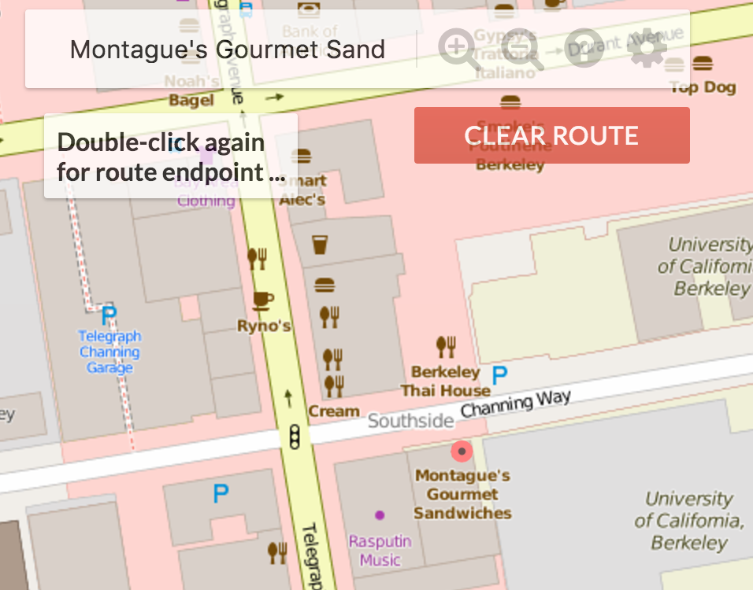
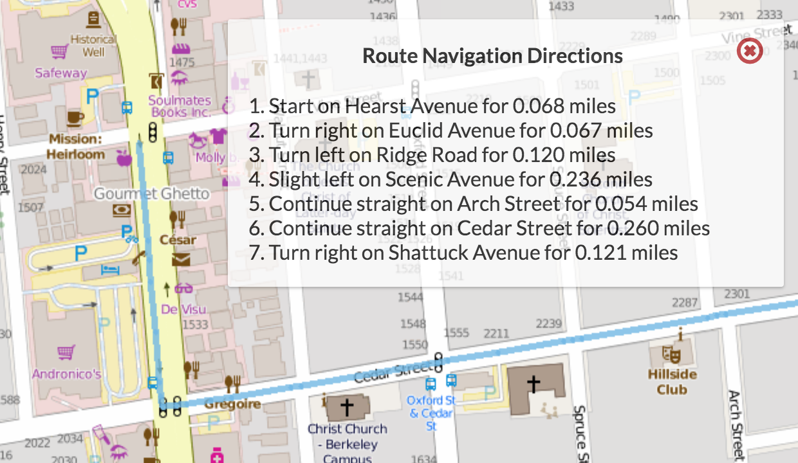

- Introduction
- Basic Setup
- Overview
- Map Rastering (Part I Overview)
- Image File Layout and “Bounding Boxes”
- Map Rastering (API)
- Routing & Location Data (Part II)
- Autocomplete and Search (Part III)
- Turn-by-turn Navigation (Part IV)
- Going Even Further (Part V)
- Heroku Deployment
- FAQ
- I provided the correct String[][] output but it doesn’t show up!
- I checked every element of map I return with RasterAPIHandler.processRequest and they’re all correct, but still nothing is appearing.
- My initial map doesn’t fill up the screen!
- I don’t draw the entire query box on some inputs because I don’t intersect enough tiles.
- I’m getting funky behavior with moving the map around, my image isn’t large enough at initial load, after the initial load, I can’t move the map, or after the initial load, I start getting NaN as input params.
- I’m failing the local router tests and I don’t know why. It says java.lang.AssertionError: The test says: Expected: [760706748, 3178363987, …], but Actual:[]
- I sometimes pass the timing tests when I submit, but not consistently.
- How do query boxes or bounding boxes make sense on a round world?
- I’m missing xml files and/or library-fa20 is not updated.
- My getLocations method works fine and I get markers on the map when I click on a search result but the Autograder test for getLocations method fails.
- Common Bugs
- Office Hours
- Submission
- Resources
- Acknowledgements
Introduction
This project was originally created by former TA Alan Yao (now at AirBNB). It is a web mapping application inspired by Alan’s time on the Google Maps team and the OpenStreetMap project, from which the tile images and map feature data for this project was downloaded.
In this project, you’ll build the “smart” pieces of a web-browser based Google Maps clone. You’ve actually already done much of this work in part A, B, and C of Project 2.
Unlike prior CS 61B projects, you’ll start with a gigantic code base that somebody else wrote. This is typical in real world programming, where you don’t have the luxury and freedom that comes with starting from totally blank files. As a result, you’ll need to spend some time getting to know the provided code, so that you can complete the parts that need completing.
By the end of this project, with some extra work, you can even host your application as a publicly available web app. More details will be provided at the end of this spec.
The project 2D video playlist starts with an introductory video that should help you get started. The slides used in the Project 2D video playlist are available here (note that this project was called Project 3 in previous semesters).
Basic Setup
There is a lot of setup for this project. Take it slowly.
Getting the Skeleton Files
Pull the skeleton using the command git pull skeleton master.
Then, go into the library-fa20 directory and do git pull. This may take a long time because there are 20,000+ files to download.
After doing this, check that the following are true:
- You should have a
proj2ddirectory in the same place as all the usual skeleton code. - There should be
library-fa20/data/proj2d_imgs,library-fa20/data/proj2d_xml, andlibrary-fa20/data/proj2d_test_inputsfolders. - There should be a
library-fa20/javalib/proj2dfolder.
If any of the folders in library-fa20 directory (e.g. data/proj2d_imgs) are missing, go into the library-fa20 directory and try the commands git submodule update --init followed by git checkout master. You might have to run git pull again if you do this.
Project 2D Setup
Importing the Project 2D Folder
Start by opening the project as usual (using “Open or Import” in IntelliJ’s welcome window).
Next, we’ll need to import the special proj2d libraries that are in the javalib/proj2d folder.
To do this, click “File” → “Project Structure”, then click “Libraries” on the screen that pops up. You should see something like what is shown in the figure below. The next step is to click the plus sign at the top of the screen, then click “Java” from the list of options.

Navigate to the library-fa20 folder and click on the proj2d folder.
{kind=link}
Click OK and a message should pop up saying “Library ‘proj2d’ will be added to the selected modules: proj2d”
Click OK again. You may be prompted to click OK one more time.
You should also import the libraries you usually do for all other assignments.
Marking the static Directory
Make sure your “static” folder is marked as the “Sources Root”. The folder should be highlighted in blue if it is already marked as the “Sources Root”.

If this is not the case for you, go to “Project Structure” → “Modules” →. Right click on the “static” folder and choose “Sources” → “OK”. The “static” folder should now be highlighted in blue.
Verifying Project 2D Setup
To finally verify that everything is working correctly, open in intelliJ class called MapServer and run its main method as you usually would.
It should start running, and in the console, you should see something similar to:
[Thread-0] INFO org.eclipse.jetty.util.log - Logging initialized @1869ms to org.eclipse.jetty.util.log.Slf4jLog
[Thread-0] WARN org.eclipse.jetty.server.AbstractConnector - Ignoring deprecated socket close linger time
[Thread-0] INFO spark.webserver.JettySparkServer - == Spark has ignited ...
[Thread-0] INFO spark.webserver.JettySparkServer - >> Listening on 0.0.0.0:4567
[Thread-0] INFO org.eclipse.jetty.server.Server - jetty-9.4.15.v20190215; built: 2019-02-15T16:53:49.381Z; git: eb70b240169fcf1abbd86af36482d1c49826fa0b; jvm 11.0.2+9-LTS
[Thread-0] INFO org.eclipse.jetty.server.session - DefaultSessionIdManager workerName=node0
[Thread-0] INFO org.eclipse.jetty.server.session - No SessionScavenger set, using defaults
[Thread-0] INFO org.eclipse.jetty.server.session - node0 Scavenging every 660000ms
[Thread-0] INFO org.eclipse.jetty.server.AbstractConnector - Started ServerConnector@3405d917{HTTP/1.1,[http/1.1]}{0.0.0.0:4567}
[Thread-0] INFO org.eclipse.jetty.server.Server - Started @2235ms
Note: If you’re using Windows, a popup might appear saying “Windows Defender Firewall has blocked some features of this app.” If this happens, you should allow access (though I think it’ll work fine even if you don’t).
What’s happening here is that your computer is now acting as a web server, with your Java code ready to respond to web requests. Let’s see it in action.
Go to the file navigation panel on the left side of intellij and look for static.page towards the bottom of your project directory. Expand it, and you should see map.html. Right click on this file, then go to “Open in Browser”, similar to shown below. We recommend Chrome.
{kind=link}
Once you’ve opened map.html, you should see something like the window below, where the front end makes a request to the back end to provide image data. Since you haven’t implemented the back end, this data will never arrive. Sad for your web browser.
{kind=link}
You’ll also notice that in the console, opening up map.html in the web browser did something. Specifically you should see the message below.
Since you haven't implemented RasterAPIHandler.processRequest, nothing is displayed in your browser.
Your rastering result is missing the render_grid field.
Let’s try one more thing: Go to the processRequest method of the RasterAPIHandler method of the bearmaps.proj2d.server.handler.impl package. You’ll see this print method statement. Try uncommenting the two print statements in the file:
System.out.println("yo, wanna know the parameters given by the web browser? They are:");
System.out.println(requestParams);
Stop (using the red stop button in IntelliJ, or using the method of your choice) the MapServer program and restart it. Then refresh the page in your web browser and you should see:
yo, wanna know the parameters given by the web browser? They are:
{lrlon=-122.19016181945801, ullon=-122.27625, w=2006.0, h=1008.0, ullat=37.88, lrlat=37.84584557684252}
Since you haven't implemented RasterAPIHandler.processRequest, nothing is displayed in your browser.
Your rastering result is missing the render_grid field.
Pretty cool! Your web browser is trying to communicate with your Java program! In this project, you’ll be modifying your Java code so that it is able to talk to the browser and display mapping data.
Phew! That’s all the setup we need. Now we can get started on the project itself.
Note: Absolutely make sure to end your instance of MapServer before re-running or starting another up. Not doing so will cause a java.net.BindException: Address already in use. If you end up getting into a situation where you computer insists the address is already in use, either figure out how to kill all java processes running on your machine (using Stack Overflow or similar) or just reboot your computer.
Overview
Application Structure
Your job for this project is to implement the back end of a web server. To use your program, a user will open an HTML file in their web browser that displays a map of the city of Berkeley, and the interface will support scrolling, zooming, and route finding (similar to Google Maps). We’ve provided all of the front end code. Your code will be the back end which does all the hard work of figuring out what data to display in the web browser.
At its heart, the project works like this: The user’s web browser provides a URL to your Java program, and your Java program will take this URL and generate the appropriate output, which will be displayed in the browser. For example, suppose your program were running at bloopblorpmaps.com, the URL might be:
bloopblorpmaps.com/raster&ullat=37.89&ullon=-122.29&lrlat=37.83&lrlon=-122.22&w=700&h=300
The job of the back end server (i.e. your code) is take this URL and generate an image corresponding to a map of the region specified inside the URL (more on how regions are specified later). This image will be passed back to the front end for display in the web browser.
You’ll notice the web address that we saw in the setup instructions is strange, starting with localhost:63365 (or similar) instead of something like www.eecs.berkeley.edu. localhost means that the website is on your own computer, and the “63365” refers to a port number, something that you’ll learn about in a future class.
The CS 61B staff has will be providing the front end (in the form of HTML and Javascript files which you will not need to open or modify), but we’ll also provide a great deal of starter code (in the form of Java files) for the back end. This starter code will handle all URL parsing and communication for the front end. This code uses the Java Spark as the server framework. You don’t need to worry about the internals of this as our code handles all the messy translation between the web browser mechanics and your Java programs.
If you do go exploring, you’ll notice that the structure of the skeleton code for this project is significantly more complex than anything you’ve probably seen in a class. This is because we’ve built something that more closely resembles what you might see in a real world project, with tons of different packages interacting with each other in various ways. You’re not required to understand all of this in order to complete the project, though you’re welcome to explore. The next section of this spec will explain what pieces you absolutely have to look at.
Parts of this Project
There are 5 parts of this project. The first two are required, the third is gold points, and the last two are completely optional. The parts are as follows:
- Part I, Map Rastering: Given coordinates of a rectangular region of the world and the size of the web browser window, provide images of appropriate resolution that cover that region.
- Part II, Routing: Given a start and destination latitude and longitude, provide street directions between those points.
- Part III, Autocomplete: Given a string, find all locations that match that string. Useful for finding, e.g. all the Top Dogs in Berkeley.
- Part IV, Written Directions: Augment the routing from Part II to include written driving directions.
- Part V, Above and Beyond: Do anything else that seems fun.
Of the two required parts, Part I is much longer that Part II. It is not as difficult as other programming projects you’ve done in the past, but it may take you several hours to understand what to do and how to get started. Once you understand what you’re supposed to do (see next section), as a rough estimate, I’d guess the coding is somewhat easier than Project 2B.
Part II is relatively straightforward once you have a good idea figured out.
Parts III is similar in difficulty to part II and part IV is very hard, and minimal guidance will be provided.
Map Rastering (Part I Overview)
Rastering is the job of converting information into a pixel-by-pixel image. In the RasterAPIHandler class, you will take a user’s desired viewing rectangle and generate an image for them.
The user’s desired input will be provided to you as a Map<String, Double> params, where the key-value pairs specify the user’s desired viewing rectangle, and the main goal of your rastering code will be to create a String[][] that contains the name of the files that should be displayed in response to this query.
As a specific example (given as “testTwelveImages.html” in the skeleton files), the user might specify that they want the following information:
{lrlon=-122.2104604264636, ullon=-122.30410170759153, w=1085.0, h=566.0, ullat=37.870213571328854, lrlat=37.8318576119893}
This means that the user wants the area of earth delineated by the rectangle between longitudes -122.2104604264636 and -122.30410170759153 and latitudes 37.870213571328854 and 37.8318576119893, and that they’d like them displayed in a window roughly 1085 x 566 pixels in size (width x height). We call the user’s desired display location on earth the query box.
To display the requested information, you need street map pictures, which we have provided in library-fa20. All the images provided are 256 x 256 pixels. Each image is at various levels of zoom. For example, the file d0_x0_y0.png is the entire map, and covers the entire region. The files d1_x0_y0.png, d1_x0_y1.png, d1_x1_y0.png, and d1_x1_y1.png are also the entire map, but at double the resolution, i.e. d1_x0_y0 is the northwest corner of the map, d1_x1_y0 is the northeast corner, d1_x0_y1 is the southwest corner, and d1_x1_y1 is the southeast corner.
More generally, at the $D$th level of zoom, there are $4^D$ images, with names ranging from dD_x0_y0 to dD_xk_yk, where k is $2^D-1$. As x increases from 0 to k, we move eastwards, and as y increases from 0 to k, we move southwards.
The job of your rasterer class is decide, given a user’s query, which files to serve up. For the example above, your code should return the following 2D array of strings:
[[d2_x0_y1.png, d2_x1_y1.png, d2_x2_y1.png, d2_x3_y1.png],
[d2_x0_y2.png, d2_x1_y2.png, d2_x2_y2.png, d2_x3_y2.png],
[d2_x0_y3.png, d2_x1_y3.png, d2_x2_y3.png, d2_x3_y3.png]]
This means that the browser should display d2_x0_y1.png in the top left, then d2_x1_y1.png to the right of d2_x0_y1.png, and so forth. Thus our “rastered” image is actually a combination of 12 images arranged in 3 rows of 4 images each.
Our code will take your 2D array of strings and display the appropriate image in the browser. If you’re curious how this works, see writeImagesToOutputStream in RasterAPIHandler.
Since each image is 256 x 256 pixels, the overall image given above will be 1024 x 768 pixels. Note that there are many combinations of images that cover the same query box. For example, we could instead use higher resolution images of the exact same areas of Berkeley; instead of using d2_x0_y1.png, we could have used d3_x0_y2.png, d3_x1_y2.png, d3_x0_y3.png, d3_x1_y3.png while also substituting d2_x1_y1.png by d3_x2_y2.png, d3_x3_y2.png, etc. The result would be total of 48 images arranged in 6 rows of 8 images each (make sure this makes sense!). This would result in a 2048 x 1536 pixel image.
You might be tempted to say that a 2048 x 1536 image is more appropriate than a 1024 x 768 image. After all, the user requested 1085 x 556 pixels and 1024 x 768 is too small to cover the request in the width direction. However, we don’t choose the images to display based on the pixel counts.
Instead, to rigorously determine which images to use, we will define the longitudinal distance per pixel (LonDPP) as follows: Given a query box or image, the LonDPP of that box or image is
$\text{LonDPP} = \frac{\text{lower right longitude} - \text{upper left longitude}}{\text{width of the image (or box) in pixels}}$
For example, for the query box in the example in this section, the LonDPP is (-122.2104604264636 + 122.30410170759153) / (1085) or 0.00008630532 units of longitude per pixel. At Berkeley’s latitude, this is very roughly 25 feet of distance per pixel.
Note that the longitudinal (horizontal) distance per pixel is not the same as the latidudinal (vertical) distance per pixel. This is because the earth is curved. If you use latDPP, you will have incorrect results.
The images that you return as a String[][] when rastering must be those that:
- Include any region of the query box.
- Have the greatest LonDPP that is less than or equal to the LonDPP of the query box (as zoomed out as possible). If the requested LonDPP is less than what is available in the data files, you should use the lowest LonDPP available instead (i.e. depth 7 images).
For image depth 1 (e.g. d1_x0_y0), every tile has LonDPP equal to 0.000171661376953125 (for an explanation of why, see the next section) which is greater than the LonDPP of the query box, and is thus unusable. This makes intuitive sense: If the user wants an image which covers roughly 25 feet per pixel, we shouldn’t use an image that covers ~50 feet per pixel because the resolution is too poor. For image depth 2 (e.g. d2_x0_y1), the LonDPP is 0.0000858306884765625, which is better (i.e. smaller) than the user requested, so this is fine to use. For depth 3 tiles (e.g. d3_x0_y2.png), the LonDPP is 0.00004291534423828125. This is also smaller than the desired LonDPP, but using it is overkill since depth 2 tiles (e.g. d2_x0_y1) are already good enough. In my head, I find it useful to think of LonDPP as “blurriness”, i.e. the d0 image is the blurriest (most zoomed out/highest LonDPP), and the d7 images are the sharpest (most zoomed in, lowest LonDPP).
As an example of an intersection query, consider the image below, which summarizes key parameter names and concepts. In this example search, the query box intersects 9 of the 16 tiles at depth 2.

For an interactive demo of how the provided images are arranged, see this FileDisplayDemo. Try typing in a filename (.png extension is optional), and it will show what region of the map this file corresponds to, as well as the exact coordinates of its corners, in addition to the LonDPP in both longitude units per pixel and feet per pixel.
Note: We do not take into account the curvature of the earth for rastering. The effect is too small to matter. That is, we assume the LonDPP is the same for all values of y. In an industrial strength mapping application, we would need to keep in mind that the LonDPP per tile varies as we move with respect to the equator.
One natural question is: Why not use the best quality images available (i.e. smallest LonDPP, e.g. depth 7 images like d7_x0_y0.png)? The answer is that the front end doesn’t do any rescaling, so if we used ultra low LonDPPs for all queries, we’d end up with absolutely gigantic images displayed in our web browser.
Image File Layout and “Bounding Boxes”
There are four constants that define the coordinates of the world map, all given in the bearmaps.utils.Constants.java class. The first is ROOT_ULLAT, which tells us the latitude of the upper left corner of the map. The second is ROOT_ULLON, which tells us the longitude of the upper left corner of the map. Similarly, ROOT_LRLAT and ROOT_LRLON give the latitude and longitude of the lower right corner of the map. All of the coordinates covered by a given tile are called the “bounding box” of that tile. So for example, the single depth 0 image d0_x0_y0 covers the coordinates given by ROOT_ULLAT, ROOT_ULLON, ROOT_LRLAT, and ROOT_LRLON.
Recommended exercise: Try opening d0_x0_y0.png. Then try using Google Maps to show the point given by ROOT_ULLAT, ROOT_ULLON. You should see that this point is the same as the top left corner of d0_x0_y0.png.
Another important constant in bearmaps.utils.Constants.java is TILE_SIZE. This is important because we need this to compute the LonDPP of an image file. For the depth 0 tile, the LonDPP is just (ROOT_LRLON - ROOT_ULLON)/TILE_SIZE, i.e. the number of units of longitude divided by the number of pixels.
All levels in the image library cover the exact same area. So for example, d1_x0_y0.png, d1_x1_y0.png, d1_x0_y1.png, and d1_x1_y1.png comprise the northwest, northeast, southwest, and southeast corners of the entire world map with coordinates given by the ROOT_ULLAT, ROOT_ULLON, ROOT_LRLAT, and ROOT_LRLON parameters.
The bounding box given by an image can be mathematically computed using the information above. For example, suppose we want to know the region of the world that d1_x1_y1.png covers. We take advantage of the fact that we know that d0_x0_y0.png covers the region between longitudes -122.29980468 and -122.21191406 and between latitudes 37.82280243 and 37.89219554. Since d1_x1_y1.png is just the southeastern quarter of this region, we know that it covers the region between longitudes -122.25585937 and -122.21191406 and between latitudes 37.82280243 and 37.85749898.
Similarly, we can compute the LonDPP in a similar way. Since d1_x1_y1.png is 256 x 256 pixels (as are all image tiles), the LonDPP is (-122.21191406 - -122.25585937)/256 or 0.00017166.
If you’ve fully digested the information described in the spec so far, you now know enough to figure out which files to provide given a particular query box.
Note: If someone is helping you who took 61B in Spring 2017 or earlier, they might suggest using a Quadtree, which was the previously recommended way of solving the tile identification problem. You’re welcome to attempt this approach, but the project has changed enough that Quadtrees are no longer necessary nor desirable as a solution.
Map Rastering (API)
In Java, you will implement the RasterAPIHandler by filling in a single method:
public Map<String, Object> processRequest(Map<String, Double> requestParams, Response response)
The given params are described in the skeleton code. An example is provided in the “Map Rastering (Overview)” section above, and you can always try opening up one of our provided html files and simply printing out params when this method is called to see what you’re given.
Your code should return a Map<String, Object> as described in the Javadocs (the /** */ comments in the skeleton code). We do this as a way to hack around the fact that Java methods can only return one value. This map includes not just the two dimensional array of strings, but also a variety of other useful information that will be used by your web browser to display the image nicely (e.g. “raster_width” and “raster_height”). See the comments in the source code for more details. We will not explain these in the spec.
Corner Cases
Corner Case 1: Partial Coverage
For some queries, it may not be possible to find images to cover the entire query box. This is OK. This can happen in two ways:
- If the user goes to the edge of the map beyond where data is available.
- If the query box is so zoomed out that it includes the entire dataset.
In these cases, simply return what data you do have available.
Corner Case 2: No Coverage
You can also imagine that the user might provide query box for a location that is completely outside of the root longitude/latitudes. In this case, there is nothing to raster, so raster_ullon, raster_ullat, etc. are arbitrary, and you should set query_success: false. If the server receives a query box that doesn’t make any sense, eg. ullon, ullat is located to the right of lrlon, lrlat, you should also ensure query_success is set to false.
Runtime
Your constructor should take time linear in the number of tiles that match the query.
You may not iterate through / explore all tiles to search for intersections with the query box. Suppose there are k tiles intersecting a query box, and n tiles total. Your entire query should run in O(k) time. Your algorithm should not run in Θ(n) time. This is not for performance reasons, since n is going to be pretty small in the real world (less than tens of thousands), but rather because the Θ(n) algorithm is inelegant.
The autograder is not smart enough to tell the difference, so if you really insist, you can do the Θ(n) algorithm. But we encourage you to try to figure out something better.
Warning
You will very likely get latitude and longitude or x and y mixed up at least once. You may also likely mix up which way is up vs. down for y. Make sure to check for that!
Testing
Java Tests
The src/test/java file contains four test files. For the purposes of testing Part I, you should try out TestRasterAPIHandler. We also provide TestRouter and TestRouterTiny for Part II, and TestDirections for part IV.
These tests are here to help save you time. In an ideal world, we’d have more time to get you to write these tests yourself so that you’d deeply understand them, but we’re giving them to you for free. You should avoid leaning too heavily on these tests unless you really understand them! The staff will not explain individual test failures that are covered elsewhere in the spec, and you are expected to be able to resolve test failures using the skills you’ve been learning all semester to effectively debug.
Ineffective/inappropriate strategies for debugging: running the JUnit tests over and over again while making small changes each time, staring at the error messages and then posting on Ed asking what they mean rather than carefully reading the message and working to understand it.
Effective strategies include: using the debugger; reproducing the buggy inputs in a simpler file that you write yourself; rubber ducky debugging, etc.
Map Tests
It can be hard to use the provided map.html file to debug, since it involves user input and is generally complicated.
Thus, we’ve also provided HTML test files in the static/simple folder. These are test.html, testTwelveImages.html, and test1234.html that you can use to test your project without using the front-end. Whereas map.html is a fully featured interactive website, these special test html files make a hard-coded call to your RasterAPIHandler. You can modify the query parameters in these files. These files allow you to make a specific call easily.
If you decide you want to debug using the fully featured map.html, you may find your browser’s Javascript console handy: on Windows, in Chrome you can press F12 to open up the developer tools, click the network tab, and all calls to your MapServer should be listed under type xhr, and if you mouse-over one of these xhr lines, you should see the full query appear, for example (click for higher resolution):
{kind=link}
You can also see the replies from your MapServer in the console tab, e.g. (click for higher resolution)
{kind=link}
Routing & Location Data (Part II)
In this part of the project, you’ll use the data structures and algorithms that you built in proj2ab and proj2c to provide street directions.
This part of the project will be fairly short. If you still want an additional challenge, try the gold points (Part III).
In Part I, you wrote the processRequest method of the RasterAPIHandler class. That is, you took direct communications from the web browser, and provided a result directly back to it.
For Part II, you’ll go a level of abstraction deeper. That is, you’re going to fill out a helper class so that RoutingAPIHandler.processRequest can do its job.
First, you’ll start by giving functionality to the AugmentedStretMapGraph class. Secondly, you’ll uncomment the (three line) shortestPath method in the Router class.
SemanticStreetMapGraph
The provided AugmentedStreetMapGraph is an extension of the provided StreetMapGraph class. In turn, the StreetMapGraph is an AStarGraph<Long>. Listed below are the methods provided by StreetMapGraph.
public List<WeightedEdge<Long>> neighbors(Long v);
public double estimatedDistanceToGoal(Long s, Long goal);
void addNode(Node node);
void addWeightedEdge(long fromID, long toID, String name);
public double lon(long v);
public double lat(long v);
public String name(long v);
protected List<Node> getNodes();
Note that the in the graph we are working with here, each vertex is a Long corresponding to a physical location in Berkeley. Each has a latitude, longitude, and optionally, a name. Each vertex represents either a named place (e.g. Bongo Burger, vertex #318886222) or a spot along a road (e.g. this spot on Ridge street, vertex #318886232). Not all vertices have names, e.g. the spot on Ridge street above. And many vertices don’t have edges, specifically those that correspond to places rather than spots along a road. So for example, neighbors(318886222) would return an empty list, since Bongo Burger is a place.
Note that 5 of these methods are public, 2 of them are package-private (can only be used by other classes in the same package), and 1 is “protected.” Protected is a new access modifier we’re introducing in this project, which means that subclasses, even from another package, are able to access the variable.
As you’ll see, AugmentedStreetMapGraph will be a subtype of the StreetMapGraph that will make use of this method.
An AugmentedStreetMapGraph will have additional methods that make it more useful for efficiently handling routing (and autocomplete) queries. Specifically, it will have:
public long closest(double lon, double lat)public List<String> getLocationsByPrefix(String prefix)public List<Map<String, Object>> getLocations(String locationName)
These methods exist, but it’s your job to fill them in for parts II and III.
long closest(double lon, double lat)
For some point on the map, whose longitude and latitude we are given, find the graph vertex that is closest to this point.
Since closest will be used for finding street routes, you should only consider vertices that have neighbors. For example, if a user clicks at position (37.875613, -122.26009), the closest method should return 1281866063, which has position (37.8756072, -122.2602582), rather than 318886222, which has position (37.875613, -122.260097), even though the haversine distance to 1281866063 is greater than to 318886222. This is because vertex 318886222 has no neighbors. The reason it has no neighbors is because it is the restaurant Bongo Burger, and not a place along a road.
This method must complete in log(N) time, where N is the number of nodes in the graph.
To achieve this runtime, you’ll need to use a KdTree or a WeirdPointSet, both of which implement the PointSet interface.
Note that Node objects are not Point objects, so you won’t be able to make a KdTree of nodes. You’ll need to do something a little more clever. There are many possibilities:
- Using a map to go between Nodes and Points.
- Making KdTree take a generic type (a little more difficult and less elegant, IMO).
shortestPath
Your last task is to implement the shortestPath method of the Router class. This will be very easy. Simply uncomment the given lines. Feel free to use either the given WeirdSolver or your AStarSolver from Project 2C.
Autocomplete and Search (Part III)
This part of the project is optional, and can be completed for 48 gold points.
Autocomplete
We would like to implement an Autocomplete system where a user types in a partial query string, like “Mont”, and is returned a list of locations that have “Mont” as a prefix. To do this, implement getLocationsByPrefix in AugmentedStreetMapGraph.java, where the prefix is the partial query string. The prefix will be a cleaned name for search that is: (1) everything except characters A through Z and spaces removed, and (2) everything is lowercased. The method will return a list containing the full names of all locations whose cleaned names share the cleaned query string prefix, without duplicates.

Runtime
Assuming that the lengths of the names are bounded by some constant, querying for prefix of length s should take O(k) time where k is the number of words sharing the prefix. As with Part II, you’ll need to add some sort of additional data structure as an instance variable to your AugmentedStreetMapGraph in order to support this operation efficiently.
Search
The user should also be able to search for places of interest. Implement AugmentedStreetMapGraph.getLocations which collects a List of Maps containing information about the matching locations - that is, locations whose cleaned name match the cleaned query string exactly. This is not a unique list and should contain duplicates if multiple locations share the same name (i.e. Top Dog, Bongo Burger). See the Javadocs for the information each Map should contain.

Implementing this method correctly will allow the web application to draw red dot markers on each of the matching locations. Note that because the location data is not very accurate, the markers may be a bit off from their real location. For example, the west side top dog is on the wrong side of the street!
Runtime
Suppose there are k results. Your query should run in O(k) time.
Turn-by-turn Navigation (Part IV)
As an optional extra-challanging feature that is not for credit, you can use your A* search route to generate a sequence of navigation instructions that the server will then be able to display when you
create a route. To do this, implement the additional method routeDirections in your Router class. This part of the project is not worth any points (even gold points), but it is awfully cool.
To save effort, you’ll want to use various methods in the NavigationDirections class, for example Bearing.
How we will represent these navigation directions will be with the NavigationDirection object defined within Router.java. A direction will follow the format of “DIRECTION on WAY for DISTANCE miles”. Note that DIRECTION is an int that will correspond to a defined String direction in the directions map, which has 8 possible options:
- “Start”
- “Continue straight”
- “Slight left/right”
- “Turn left/right”
- “Sharp left/right”
What direction a given NavigationDirection should have will be dependent on your previous node and your current node along the computed route. Specifically, the direction will depend on the relative bearing between the previous node and the current node, and should be as followed:
- Between -15 and 15 degrees the direction should be “Continue straight”.
- Beyond -15 and 15 degrees but between -30 and 30 degrees the direction should be “Slight left/right”.
- Beyond -30 and 30 degrees but between -100 and 100 degrees the direction should be “Turn left/right”.
- Beyond -100 and 100 degrees the direction should be “Sharp left/right”.
The navigation will be a bit complicated due to the fact that the previous and current node at a given point on your route may not necessarily represent a change in the “way” that you’re currently on, where a way is the name of a street or path that you’re currently travelling along. That is, if your route is from vertex 38623 to 2398471 to 1239871, these might all be the same street, and driving directions aren’t useful if they keep saying “Go straight on Shattuck. Go Straight on Shattuck. Go straight on Shattuck.” As a result, what you will need to do as you iterate through your route is keep track of when you actually change ways, and if so generate the correct distance for the NavigationDirection representing the way you were previously on, add it to the list, and continue. If you happen to change ways to one without a name, it’s way should be set to the constant “unknown road”.
As an example, suppose when calling routeDirections for a given route, the first node you remove is on the way “Shattuck Avenue”. You should create a NavigationDirection where the direction corresponds to “Start”, and as you iterate through the rest of the nodes, keep track of the distance along this way you travel.
When you finally get to a node that is not on “Shattuck Avenue”, you should make sure NavigationDirection should have the correct total distance travelled along the previous way to get there (suppose this is 0.5 miles).
As a result, the very first NavigationDirection in your returned list should represent the direction “Start on Shattuck Avenue for 0.5 miles.”. From there, your next NavigationDirection should have the name of the way your current node is on, the direction should be calculated via the relative bearing, and you should continue calculating its distance like the first one.
After you have implemented this properly you should be able to view your directions on the server by plotting a route and clicking on the button on the top right corner of the screen.

Going Even Further (Part V)
You’re welcome to go even further. If you come up with something cool, let us know.
Heroku Deployment
You will be able to deploy your street mapping application to the web.
For instructions on deploying on Heroku click here
FAQ
I provided the correct String[][] output but it doesn’t show up!
In order for something to show up on test.html, you need to set query_success to true, and in order for something to show up on map.html all the parameters must be set.
I checked every element of map I return with RasterAPIHandler.processRequest and they’re all correct, but still nothing is appearing.
If you’re using notation that you learned somewhere that looks like {{}} to initialize your map, you should not be doing so. Double-braces notation is an unintended “feature” of Java that is actually a terrible plan for a number of reasons.
My initial map doesn’t fill up the screen!
If your monitor resolution is high & the window is fullscreen, this can happen. Refer to the reference solution to see if yours looks similar.
I don’t draw the entire query box on some inputs because I don’t intersect enough tiles.
That’s fine, that’ll happen when you go way to the edge of the map. For example, if you go too far west, you’ll never reach the bay because it does not exist.
I’m getting funky behavior with moving the map around, my image isn’t large enough at initial load, after the initial load, I can’t move the map, or after the initial load, I start getting NaN as input params.
These all have to do with your returned parameters being incorrect. Make sure you’re returning the exact parameters as given in the project 3 slides or the test html files.
I’m failing the local router tests and I don’t know why. It says java.lang.AssertionError: The test says: Expected: [760706748, 3178363987, …], but Actual:[]
This is probably because you are including locations of places like Bongo Burger in your KdTree (or WeirdPointSet). As noted in the spec above, when handling a call to closest, you should only include vertices that have neighbors, otherwise closest may a return a node with no neighbors, which is trivially unable to act as a useful starting or ending node (since it literally cannot be reached).
I sometimes pass the timing tests when I submit, but not consistently.
If you have a efficient solution: it will always pass. I have yet to fail the timing test with either my solution or any of the other staff’s solutions over a lot of attempts to check for timing volatility.
If you have a borderline-efficient solution: it will sometimes pass. That’s just how it is, and there really isn’t any way around this if we want the autograder to run in a reasonable amount of time.
How do query boxes or bounding boxes make sense on a round world?
For the rastering part of the project, we assume the world is effectively flat on the scale of the map you’re looking at. In truth, each image doesn’t cover a rectangular area, but rather a “spherical cap”.
I’m missing xml files and/or library-fa20 is not updated.
Go into the library-fa20 directory and try the commands git submodule update --init followed by git checkout master.
My getLocations method works fine and I get markers on the map when I click on a search result but the Autograder test for getLocations method fails.
Try verifying that your getLocations method works for the cleaned strings as well other than the unclean strings
Common Bugs
I pass all the local tests, but I’m getting a NoSuchElementException in the autograder: The autograder uses randomized sources and targets. Some targets may not be reachable from all sources. In these cases, you can do anything you want (e.g. return an empty list of longs) except let your program crash.
Office Hours
For office hours debugging, we will be implementing a procedure to keep time usage reasonable.
- Course staff will spend at most ~10 minutes per student.
-
You must provide a useful description of your question, or the staff may choose to help another person on the queue that does have one.
-
Your code must be well documented, including all methods you write, according to the style guide. This is to minimize time spent verbally explaining what each method does.
-
If your question is for debugging help, you must be prepared to explain the error that is being caused and have a test or input that can easily reproduce the bug for ease of debugging. If you come to us saying something does not work, but have not written any tests or attempted to use the debugger, we will not help you.
- When we do provide debugging help, it may be at a high level, where we suggest ways to reorganize your code in order to make clarity and debugging easier. It is not a good use of your time or the TAs’ time to try to find bugs in something that is disorganized and brittle.
Submission
The autograder will be released on Wednesday 11/04/2020.
Note: We have your git configured to avoid pushing all the extra stuff we don’t care about, e.g. html files DO NOT submit or upload to git any xml or png files. Attempting to do so will eat your internet bandwidth and possibly even crash your computer.
Resources
FileDisplayDemo: FileDisplayDemo.html
Acknowledgements
Data made available by OSM under the Open Database License. JavaSpark web framework and Google Gson library.
Alan Yao for creating the original version of this project. Colby Yuan and Eli Lipsitz for substantial refactoring of the front end. Rahul Nangia for substantial refactoring of the back end.